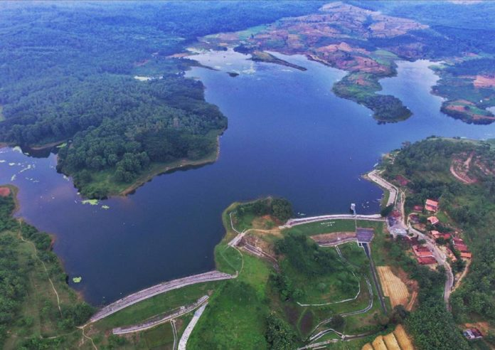

Waduk Greneng Blora

Lokasi selanjutnya yang juga menarik kamu jadikan lokasi wisata di Kota Blora adalah Waduk Greneng Blora. Di lokasi ini kamu bisa menikmati pemandangan alam yang indah, dengan hamparan pepohonan yang hijau dan rindang. Sekaligus kamu juga bisa menikmati udara yang sangat sejuk. Bagi kamu yang menginginkan suasana santai, Waduk Greneng bisa menjadi solusinya. Sebab kamu di lokasi ini akan dimanjakan dengan suasana alam yang tenang serta semilir angin alam yang sangat sejuk. Sehingga seakan-akan kamu tengah berelaksasi. Lokasi ini paling pas dinikmati ketika sore hari. Sebab suasana tidak terlalu panas, ditambah semburat cahaya matahari yang mau tenggelam menambah kemenarikan wisata yang satu ini.